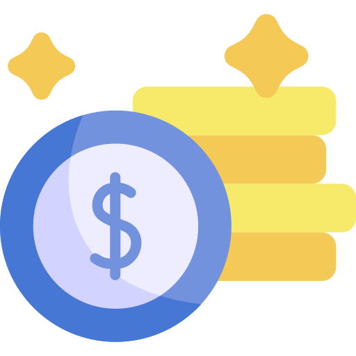

팔리는 투자 
-
 26개월~34개월 사이 팔려요.
26개월~34개월 사이 팔려요.송아지는 26~34개월 사이에 최고 성장을 이룹니다.
뱅카우는 고객님의 투자금으로 이 기간 동안 '크고 단단한 위통 만들기', '근육 발달시키기', '육질 개선시키기' 등의 확실한 성장 단계 목표를 가지고 최적의 사료를 지급하고 깨끗한 환경을 유지합니다.
-
 뱅카우는 국내 정식 금융 상품
뱅카우는 국내 정식 금융 상품뱅카우는 금융위원회로부터 강도 높은 실사 점검을 통해 국내 정식 금융 상품의 하나인 투자계약증권으로 인정받았습니다.
뱅카우에서 농가와 함께 한우 키우며
자산을 성장시키는 여정을 경험해 보세요.
한우는 환금성 높은 자산
26개월부터 현금이 됩니다저작권, 미술품, 명품, 부동산은 언제 팔릴지 모르지만, 한우는 반드시 정해진 때에 팔립니다.
국내 1인당 한우소비량이 계속 증가하는 것은 물론 해외에서도 수요가 많아 거래가 활발합니다.
한우는 투명한 자산
누구든 시세를 조회할 수 있습니다한우는 성장 상태를 시각적으로 확인할 수 있어 언제 팔아야 하는지 예측하기 쉽습니다.
축산물품질평가원·농림축산식품부 같은 정부기관이 매일 시장을 평가하고 정보를 업데이트합니다.
투자계약증권
금융당국에서 인정받은 정식 금융 상품뱅카우는 금융당국의 신종증권 사업 관련 가이드라인에 따라 고객님들의 자산을 안전하게 보호하기 위해 다음과 같은 조치를 취했습니다.
사업자의 도산 위험과 투자자 권리를 절연
금융회사를 통한 투자자 예치금 분리 보관
합리적 분쟁처리 절차 마련
투자자 보호기금 마련
투자설명자료 및 광고기준 마련
사업중단 시 제3자 업무수행 체결
투자 전 체크하기
현금화 가능성이 높나요?투자하기 전에, 투자 자산을 현금으로 전환하는 데 걸리는 시간을 확인해 보세요.
상품의 인기나 시장 상황에 따라 현금화 시간이 다를 수 있으며, 이러한 차이가 크다면 투자에 대한 신중한 고려가 필요합니다.
뱅카우는 정해진 시점에 반드시 현금화 됩니다.
검증된 정보를 바탕으로 미리 이익을 예상해 볼 수 있습니다.